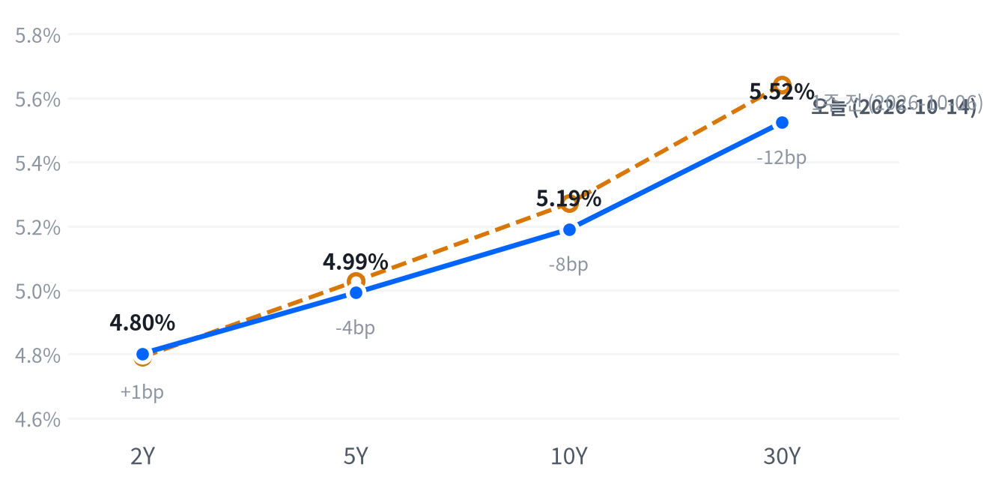

근원 소비자물가가 예상을 웃돌아 10월 인상 가능성이 다시 열리자 광학·전력·서버 등 AI 인프라 관련주가 급락했고 나스닥이 1.88% 내렸다. 헬스케어·필수소비재가 올라 다우는 제자리였고, 국채금리는 장중 급등분을 거의 다 되돌렸다.
종가 금리가 거의 움직이지 않은 날의 낙폭이라, 정책금리보다 AI 설비 투자를 빚으로 대는 업체의 신용·수익성 의문이 매도를 키웠다고 본다. 15일 TSMC 실적과 PPI·소매판매가 다음 방향을 가른다.
9월 근원 소비자물가가 전월비 0.3%로 예상(0.2%)을 웃돌자 10월 FOMC 인상 가능성이 다시 열렸고, 이날 매도는 AI 인프라 관련주에 몰렸다. 광학·전력·서버 업체가 일제히 급락해 기술 업종을 끌어내렸고, 헬스케어·필수소비재로 자금이 옮겨 가 다우는 거의 제자리에서 끝났다.
이 낙폭은 정책금리 재가격보다 AI 설비 투자를 빚으로 대는 업체의 신용·수익성 의문이 관련주 전체로 번진 결과로 판단한다. 2년물은 장중 크게 뛰었다가 종가로는 0.9bp 오르는 데 그쳤고 10년물은 내렸다. 그런데 AI 인프라 다섯 종목은 평균 7.90% 내렸고, 금리가 되돌린 오후에도 저점을 낮췄다. 시장에서 나온 주된 설명은 금리 인상 전망이 AI 구축 자금 조달 우려를 키웠다는 것이다. 이 설명이 맞다면 종가 국채금리는 오후 안전자산 매수에 눌려 실제 금리 충격을 작게 보여 준 셈이다. 두 설명은 2년물이 뚜렷이 오르는 날 AI 인프라가 시장보다 얼마나 더 빠지는지에서 갈린다.
반도체·AI 인프라 관련주의 3개월 상대수익률은 이날 더 나빠졌다. 신용 쪽 설명이 맞다면 금리가 안정되는 것만으로는 회복 근거가 되지 않고, 네오클라우드·서버 업체 회사채 같은 AI 차입 신용 지표가 먼저 진정돼야 한다. 이 지표는 정기적으로 받는 자료가 아니어서 지금은 판단을 관찰 단계에 둔다. 헬스케어·필수소비재의 상대 강세는 하루 사이의 자금 이동이라, 15일 PPI·소매판매 뒤에도 이어지는지 본 뒤에 무게를 싣는다.
10월 16일 09:30(ET)부터 27일 종가까지, 2년물 종가가 전일 대비 5bp 이상 오른 세션마다 AI 인프라 다섯 종목 단순평균 등락률에서 S&P 등락률을 뺀 값을 잰다. 그 평균이 -2.0%p보다 덜 나쁘면 신용 쪽 판단이 지지되고, 그 이하면 정책금리 쪽 설명이 맞아 이 판단은 약해진다. 그런 세션이 없으면 결론을 내지 않고, 다섯 종목의 실적 발표일은 비교에서 뺀다. 그 전에 10월 15일 02:00(ET) TSMC 3분기 실적과 08:30 PPI·소매판매가 나오고, 27~28일 FOMC가 이어진다.
출처: Reuters
| 지수 | 종가 | 등락률 | 기준일 |
|---|---|---|---|
| 닛케이225 | 67,777.52 | -1.82% | 10월 13일 |
| 항셍 | 24,345.22 | +0.30% | 10월 13일 |
| 상해종합 | 3,800.86 | +0.10% | 10월 13일 |
| DAX | 25,259.90 | -0.07% | 10월 13일 |
| FTSE100 | 10,724.86 | +0.70% | 10월 14일 |
| 유로스톡스50 | 6,167.01 | -0.55% | 10월 13일 |
| VIX | 16.87 | +10.48% | 10월 14일 |
아시아·유럽 지수는 10월 14일 종가가 FTSE100만 들어와 나머지는 직전 거래일 값이다.
미국은 아시아의 약세를 이어받았다. 닛케이가 1.82% 내린 반면 항셍과 상해종합은 소폭 올라, 아시아는 지역 안에서도 갈렸다. 유럽은 보합이었지만 역시 지역 안에서 갈렸다(FTSE100 +0.70%, 유로스톡스50 -0.55%). 미국 장이 끝났을 때 VIX는 16.87로 뛰어 있었다.
야간 선물은 CPI 발표 시각에 꺾였다. S&P 선물(ES)은 발표 시각인 08:30(ET)에 7,880으로 고점을 찍은 뒤 30분 만에 7,821까지 밀렸고, 나스닥 선물(NQ)도 같은 09:00에 30,535로 저점을 찍었다. 현물은 S&P -0.4%, 나스닥 -0.63%, 러셀2000 -0.59%의 갭으로 하락 출발했다.
평균적인 종목은 지수만큼 빠지지 않았다. 참여도는 소수가 끌어내림이었다. 동일가중 S&P에서 시총가중 지수를 뺀 수익률 차이가 +0.51%p로, 하락은 소수의 대형주에 몰려 있었다. 나스닥과 러셀2000은 저점권에서, S&P는 하루 범위의 중간쯤에서 끝났다.
저점권·고점권 경계는 최근 2,256거래일의 일간 종가 위치 이력으로 다시 잰 기준이다.
물가 지표가 금리를 먼저 움직였고, 오후에는 금리와 주가가 따로 갔다. 오전에는 인상 확률이 오르면서 2년물이 뛰고 주가가 밀렸지만, 오후에 금리가 되돌린 뒤에도 AI 인프라 매도는 멈추지 않았다. 대형 은행 실적은 엇갈려 금융 업종을 따로 움직였다. 장 마감 뒤 시간외 거래를 움직인 실적 발표는 확인되지 않았다.
| 지수 | 종가 | 등락률 |
|---|---|---|
| S&P500 가치주 | 234.06 | 0.00% |
| 다우존스 | 51,621.48 | -0.09% |
| S&P500 | 7,718.94 | -1.11% |
| 나스닥 | 26,692.87 | -1.88% |
| S&P500 성장주 | 141.82 | -1.90% |
| 러셀2000 | 2,729.53 | -1.93% |
| 섹터 | 등락률 |
|---|---|
| 헬스케어 | +2.53% |
| 필수소비재 | +2.22% |
| 에너지 | +0.64% |
| 소재 | -0.10% |
| 유틸리티 | -0.36% |
| 금융 | -0.55% |
| 경기소비재 | -0.77% |
| 부동산 | -0.81% |
| 산업재 | -0.97% |
| 커뮤니케이션서비스 | -1.30% |
| 기술 | -2.98% |
9월 CPI 뒤 AI 인프라 매도가 번지며 S&P500은 1.11% 내린 7,719로 마감했다. 나스닥은 26,693으로 1.88%, 러셀2000은 1.93% 내렸고 다우는 0.09% 내리는 데 그쳤다. 세 지수 모두 평소 하루 움직임보다 크게 움직였다. 그래도 S&P는 최근 2년(504거래일) 가운데 이보다 높았던 날이 22일뿐인 고점 부근에 있다.
S&P500·나스닥·러셀2000의 하루 움직임은 최근 60거래일 평균 하루 폭의 각각 1.61배·1.84배·2.30배, VIX는 1.81배다.
하락은 AI 인프라에서 시작해 반도체 전반으로 번졌다. 차마스 팔리하피티야가 CoreWeave의 2032년 만기 회사채 수익률 차트를 올려 관심을 모았고, 이 회사채 수익률은 10월 13일 종가 기준 14.5%로 사상 최고였다. Gartner는 네오클라우드 업체의 최대 80%가 2030년까지 독립적으로 살아남기 어렵다고 경고했다. CoreWeave가 16% 안팎 급락했다는 보도가 나왔고, 필라델피아 반도체지수는 4.30% 내렸다. 여기에 Barclays가 서버 업체들의 투자의견을 낮추며 서버 매출 강세의 질을 문제 삼았다. 금리 인상 전망이 AI 구축 자금 조달 우려를 키웠다는 해석이 나왔고, VIX도 평소보다 두 배 가까운 폭으로 뛰었다.
지수 하락은 기술 업종이 거의 다 만들었다. 추정 기여도로 보면 기술이 지수에서 1.01%p를 덜어냈고, 커뮤니케이션서비스가 0.17%p, 경기소비재가 0.10%p를 더 뺐다. 헬스케어는 0.25%p, 필수소비재는 0.07%p를 보탰다. 업종 합으로 설명되지 않는 부분은 -0.04%p다. 성장주가 1.90% 내리는 동안 가치주는 제자리여서, 스타일도 뚜렷이 갈렸다.
추정 기여도는 업종 비중을 직접 받지 않아, 최근 252거래일 지수·업종 수익률로 추정한 비중을 곱한 값이다. 소재와 부동산은 비중을 추정할 수 없어 빠졌다.
장중에는 오후의 움직임이 하락의 성격을 드러냈다. 나스닥은 개장 직후가 고점이었고, 2년물이 정오 무렵 고점을 찍고 내려온 뒤에도 밀려 15:00(ET)에 시가 대비 1.6% 낮은 저점을 찍었다. 마감 직전 일부를 되찾았지만 저점권을 벗어나지 못했다. 금리 하락이 주가를 받치지 못한 오후였다.
대형 은행 실적은 갈렸다. Bank of America는 매출이 예상에 못 미쳤고 채권 트레이딩 수익이 17% 줄었으며, 재무부 과징금 12억 달러가 겹쳤다. Morgan Stanley는 주식 트레이딩 수익 58억 달러로 예상을 9억 달러 넘게 웃돌았다. 금융 업종은 0.55% 내려 시장보다 덜 빠졌다.
출처: Motley Fool, CNBC, Invezz, 서울경제, Reuters
| 만기 | 종가 | 전일比(bp) | 1주 전 | 주간 변화(bp) |
|---|---|---|---|---|
| 2Y | 4.802% | +0.9 | 4.791% | +1.1 |
| 5Y | 4.992% | -1.5 | 5.028% | -3.6 |
| 10Y | 5.190% | -2.7 | 5.271% | -8.1 |
| 30Y | 5.524% | -3.9 | 5.641% | -11.7 |
네이버 국채 종가, 전 만기 10월 14일 기준. 1주 전은 10월 6일 종가다.

1주 전과 비교하면 2년물만 올랐고 30년물이 가장 크게 내려, 장기물이 이끈 불 플래트닝이다.
물가 서프라이즈에 장중 크게 뛴 국채금리는 종가까지 거의 남지 않았다. 2년물은 0.9bp 오른 4.802%로 끝났고, 10년물은 2.7bp 내린 5.190%로 이보다 높았던 날이 12일뿐인 고점권에 머물렀다. 30년물은 3.9bp 내린 5.524%였다.
장중 궤적은 종가와 딴판이었다. 2년물은 정오 무렵 14bp 오른 4.93%까지, 30년물은 5.63%까지 올랐다가 오후에 급반락했다는 보도가 나왔다. 오후 되돌림은 주가가 1% 넘게 밀리면서 나온 안전자산 매수로 설명됐고, 연준 인사 발언 같은 다른 재료는 확인되지 않았다. 종가로는 2년물이 오르고 장기물이 내려 커브가 평탄해졌다. 2s10s는 38.8bp로 전날(42.4bp)보다 3.6bp 좁혀졌고, 5s30s는 53.2bp다.
10년물 하락은 실질금리 쪽에서 나왔을 가능성이 크다. 10월 14일 10년 기대인플레는 2bp 올라 2.35%였는데 명목금리는 내렸다. 명목금리를 실질금리와 기대인플레로 나눈 최신 자료(10월 13일)에서도 10년물 3bp 하락은 모두 실질금리 몫이었다. 5년 뒤 5년 기대인플레는 2.34%로 1bp 오르는 데 그쳐, 물가 서프라이즈가 장기 물가 기대로 번지지는 않았다. 이 기대인플레 값은 위험·유동성 프리미엄이 섞인 물가 보상이다. 하이일드 스프레드는 10월 13일 3.16%로 5거래일 사이 13bp 넓어졌고, 이날 AI 차입 신용 우려가 반영된 값은 다음 갱신에서 나온다.
5년 뒤 5년 명목금리 5.42%, 실질 3.09%(10월 13일 기준). 기대인플레 쪽 수치와의 교차검증은 할 수 없었고, 위험 프리미엄이 섞인 값이다.
출처: Benzinga, Reuters, CNBC
| 통화쌍 | 종가 | 등락률 | 기준일 |
|---|---|---|---|
| DXY | 102.54 | +0.31% | 10월 14일 |
| USD/KRW | 1,341.72 | +0.12% | 10월 14일 |
| USD/JPY | 158.33 | -0.01% | 10월 14일 |
| EUR/USD | 1.1158 | -0.38% | 10월 14일 |
달러는 유로에 강했고 엔에는 제자리였다. 달러지수는 0.31% 오른 102.54로 평소와 비슷한 크기로 움직였고, 유로/달러는 0.38% 내린 1.1158이었다. 원/달러는 0.12% 오른 1,342원으로, 이보다 낮았던 날이 6일뿐인 원화 강세 구간에 있다.
달러지수의 하루 움직임은 최근 60거래일 평균 하루 폭의 1.03배다. 환율은 뉴욕 16:00 ET 가격, 전 거래일 같은 시각 대비다.
종가의 달러 강세는 금리차보다 위험회피에서 나왔다고 본다. 2년물이 장중 상승분을 거의 다 반납한 뒤에도 달러지수는 오름폭을 지켰고, 최근 60거래일 동안 주식과 달러는 느슨하게 반대로 움직여 왔다. 엔/달러는 금리 궤적을 따라 CPI 직후 09:00(ET) 158.95까지 올랐다가, 금리가 되돌린 오후에 158.04까지 밀려 제자리로 끝났다. 엔이 안전자산 수요를 함께 받아 달러 강세가 유로 쪽에 몰렸다고 보지만, 유로 약세의 개별 재료는 확인되지 않았다.
최근 60거래일 주식과 달러의 상관은 -0.30(직전 60거래일 -0.51)이다.
| 품목 | 종가 | 등락률 |
|---|---|---|
| WTI | $95.15 | +0.48% |
| Brent | $106.04 | -0.09% |
| 천연가스 | $3.268 | -1.51% |
| 금 | $4,122.80 | -1.51% |
금리 인상 우려가 커진 날 금이 밀렸고, 중동 긴장에도 유가는 거의 반응하지 않았다. 금은 1.51% 내린 4,123달러로 평소보다 조금 큰 폭이었다. WTI는 0.48% 오른 95.15달러로 이보다 높았던 날이 45일뿐인 높은 수준이고, 브렌트는 106.04달러로 거의 움직이지 않았다. 천연가스도 1.51% 내렸다.
금 약세는 물가 지표 뒤 높아진 정책금리 기대와 달러 강세를 따라간 것으로 본다. 금은 2년물이 장중 고점을 찍은 정오 무렵 시가 대비 2.2% 낮은 저점을 찍었고, 오후에 금리가 되돌리자 일부를 되찾았다. 10년 명목금리가 내린 날이라 금리 쪽 설명은 10월 14일 실질금리가 갱신돼야 확인된다.
유가는 중동 소식에 장중 1% 넘게 올랐다가 상승폭을 대부분 반납했다. 이란 혁명수비대가 미 군함 공격 시점을 기다린다고 밝혔고, 사우디 아람코 다란 행정건물이 공격을 받았으며(부상자 없음) 호르무즈 해협에서 컨테이너선 피격이 보고됐다는 보도가 나왔다. 브렌트가 제자리인 날 WTI만 올라 두 유종의 가격 차는 10.89달러로 전날(11.44달러)보다 좁혀졌다. 실제 공급 차질이 확인되지 않아, 이날 지정학 보도가 유가에 더한 몫은 작았다고 본다.
원자재·환율은 뉴욕 16:00 ET 가격, 전 거래일 같은 시각 대비다. 결제가와 다를 수 있다.
출처: CNBC
미국 경기 국면을 골디락스에서 교착으로 옮긴다. 9월 CPI가 물가 판단의 무게를 바꿨다. 물가 점수는 -0.928에서 -0.305로 올라와 둔화 쪽으로 기울었다고 보기 어려운 범위에 들어왔고, 성장 점수(-0.117)는 보합에 머물러 물가 좌표만 한 칸 움직였다. 9월 30일 골디락스로 들어온 지 11영업일 만의 변경이다.
근원 물가 전월비가 두 달 연속 높게 나오면서 소비자물가 전월비와 근원 전월비의 석 달 평균이 재가속으로 돌아섰다. 전년비와 PCE·생산자물가의 석 달 평균은 아직 내려오는 중이라, 지표별로 보면 물가 판단은 둔화 쪽에 남아 있다. 물가 좌표는 10월 15일 9월 생산자물가가, 성장 좌표는 11월 6일 10월 고용이 다시 점검한다.
고용 판단은 완만한 개선을 유지한다(7개 중 4개). 새 발표가 없어, 실업수당 청구가 안정적이라는 근거가 그대로다. 고용축 +0.535
| 지표 | Actual | Forecast | Previous | 발표일 | 컨센 대비 | 직전 대비 | 추세 |
|---|---|---|---|---|---|---|---|
| 구인건수(8월) | 7,079K | — | 7,335K | 2026-08 기준월 | 악화 | 악화(미미) · 3개월 평균 7,336K → 7,199K | |
| 신규 실업수당 청구 | 197,000 | — | 199,000 | 2026-10-08 (10월 3일 주간) | 개선 | 개선(완만) · 4주 평균 206K → 198K | |
| 신규 청구 4주 평균 | 198,000 | — | 200,500 | 2026-10-08 (10월 3일 주간) | 개선 | 개선(완만) · 4주 평균 206K → 201K | |
| 계속 실업수당 청구 | 1,716,000 | — | 1,699,000 | 2026-10-08 (9월 26일 주간) | 악화 | 개선(뚜렷) · 4주 평균 1,777K → 1,711K | |
| 비농업 고용 변화(9월) | +29K | — | +133K | 2026-09 기준월 | 악화 | 악화(미미) · 3개월 평균 +81K → +51K | |
| 실업률(9월) | 4.2% | — | 4.1% | 2026-09 기준월 | 악화 | 개선(미미) · 3개월 평균 4.27% → 4.13% | |
| 평균시간당임금 MoM(9월) | +0.13% | — | +0.32% | 2026-09 기준월 | 악화 | 악화(미미) · 3개월 평균 +0.21% → +0.19% |
생산·활동은 미미한 악화를 유지한다(5개 중 2개). 기존주택 판매의 석 달 평균이 뚜렷이 낮아진 것이 주된 근거다. 생산·활동축 -0.467
| 지표 | Actual | Forecast | Previous | 발표일 | 컨센 대비 | 직전 대비 | 추세 |
|---|---|---|---|---|---|---|---|
| 산업생산 MoM(8월) | +0.02% | — | +0.20% | 2026-08 기준월 | 악화 | 보합 · 3개월 평균 +0.24% → +0.14% | |
| 내구재주문 MoM(8월) | -0.07% | — | +0.87% | 2026-08 기준월 | 악화 | 악화(완만) · 3개월 평균 +1.95% → +0.46% | |
| 신규주택판매(8월) | 684K | — | 643K | 2026-08 기준월 | 개선 | 개선(미미) · 3개월 평균 645K → 666K | |
| 기존주택판매(9월) | 399만 | — | 393만 | 2026-10-13 | 개선 | 악화(뚜렷) · 3개월 평균 4,120K → 3,993K | |
| 실질GDP QoQ 연율(2분기) | +2.2% | — | +2.5% | 2026년 2분기 기준 | 악화 | — |
소비는 미미한 악화를 유지한다(2개 중 1개). 소매판매의 석 달 평균 둔화가 근거이고, 9월 소매판매는 10월 15일에 나온다. 소비축 -0.419
| 지표 | Actual | Forecast | Previous | 발표일 | 컨센 대비 | 직전 대비 | 추세 |
|---|---|---|---|---|---|---|---|
| 소매판매 MoM(8월) | +1.13% | — | -0.46% | 2026-08 기준월 | 개선 | 악화(뚜렷) · 3개월 평균 +1.09% → +0.29% | |
| 미시간대 소비자심리(8월) | 51.7 | — | 55.2 | 2026-08 기준월 | 악화 | 개선(미미) · 3개월 평균 49.3 → 52.1 |
물가 판단은 둔화를 유지하지만 9월 CPI로 힘이 크게 빠졌다(8개 중 5개). 소비자물가 전월비와 근원 전월비의 석 달 평균이 완만한 재가속으로 돌아섰고, 생산자물가의 석 달 평균이 뚜렷이 낮아진 것이 둔화 쪽을 받친다. 미시간대 1년 기대인플레는 교착이다. 물가축 -0.305
| 지표 | Actual | Forecast | Previous | 발표일 | 컨센 대비 | 직전 대비 | 추세 |
|---|---|---|---|---|---|---|---|
| CPI YoY(9월) | 3.72% | 3.6% | 3.35% | 2026-10-14 | 상회▲ | 상승 | 둔화(미미) · 3개월 평균 3.80% → 3.46% |
| CPI MoM(9월) | +0.65% | 0.6% | +0.40% | 2026-10-14 | 부합= | 상승 | 재가속(완만) · 3개월 평균 +0.23% → +0.37% |
| Core CPI YoY(9월) | 2.57% | 2.5% | 2.45% | 2026-10-14 | 상회▲ | 상승 | 둔화(미미) · 3개월 평균 2.71% → 2.49% |
| Core CPI MoM(9월) | +0.33% | 0.2% | +0.29% | 2026-10-14 | 상회▲ | 상승 | 재가속(완만) · 3개월 평균 +0.19% → +0.28% |
| PPI 최종수요 MoM(8월) | +0.40% | — | +0.07% | 2026-08 기준월 | 상승 | 둔화(뚜렷) · 3개월 평균 +0.79% → +0.12% | |
| PCE 물가 YoY(8월) | 3.42% | — | 3.36% | 2026-08 기준월 | 상승 | 둔화(미미) · 3개월 평균 3.59% → 3.41% | |
| Core PCE YoY(8월) | 3.01% | — | 2.98% | 2026-08 기준월 | 상승 | 둔화(미미) · 3개월 평균 3.12% → 3.01% | |
| 미시간대 1년 기대인플레(8월) | 4.0% | — | 4.2% | 2026-08 기준월 | 하락 | 교착 · 3개월 평균 4.43% → 4.27% | |
| 뉴욕 연은 1년 기대인플레(9월) | 3.9% | — | 3.6% | 2026-10-07 | — | — |
BLS가 10월 14일 08:30(ET)에 발표한 9월 소비자물가는 전월비 0.6%(8월 0.4%), 전년비 3.7%(8월 3.4%)였다. 헤드라인 전월비는 다우존스 컨센서스와 같았지만 전년비는 예상(3.6%)을 웃돌았다. 근원은 전월비 0.33%, 전년비 2.6%로 컨센서스(전월비 0.2%, 전년비 2.5%)를 모두 넘었다.
BLS는 휘발유가 9월 한 달 9.1% 올라 전체 상승분의 절반 이상을 만들었다고 밝혔다. 에너지는 5.196%(8월 2.097%) 올랐다. 근원 쪽에서는 주거비가 0.391%로 8월(0.264%)보다 빨라졌고, 원문 기준으로는 숙박이 2.0% 뛰었다. 중고차(0.669%)와 항공료(+1.2%), 오락(+0.5%)도 올랐고 통신과 처방약(-1.2%)은 내렸다. 에너지 서비스를 뺀 서비스 물가도 8월보다 빨라졌다. CPI는 월별 수정이 없고, 원문은 일회성 요인을 따로 짚지 않았다.
헤드라인 상승분의 절반 이상은 중동 전쟁 뒤 오른 휘발유 몫이지만, 근원이 두 달 연속 0.3%이고 주거비와 서비스가 함께 빨라져 에너지만의 일로 넘기기 어렵다고 판단한다. 주거비 밖의 서비스에서도 운송 서비스(+0.6%)와 항공료가 올랐다. 반면 장기 기대인플레는 거의 움직이지 않아, 시장은 물가의 2차 파급을 아직 크게 반영하지 않았다. 이 발표가 물가 좌표를 교착으로 올렸고 10월 인상 논거를 강화했다.
직전 대비는 Actual을 Previous와 비교한 것이고, 추세는 최근 3개월 평균을 그 앞 3개월 평균과 비교한 것입니다(주간 실업수당 청구는 4주 평균끼리). 추세의 세기는 그 지표가 평소 움직이는 폭에 견준 크기이고, 작은 변화는 보합으로 봅니다. 분기 지표인 GDP는 두 비교가 같은 숫자를 보므로 직전 대비만 싣습니다.
연준의 다음 금리 변경은 12월 9일 FOMC의 25bp 추가 인상이라는 판단을 유지하지만, 10월 인상 가능성이 다시 살아났다. CME FedWatch 기준 10월 27~28일 FOMC 인상 확률은 전일 22.1%에서 CPI 직후 약 54%까지 올랐다가 장 마감 무렵 35%로 내려왔다(같은 매체가 전한 수치끼리 비교). 연내 최소 한 번 더 인상할 확률은 90%를 넘는다. 12월 회의만의 확률은 이날 수치를 확보하지 못했다.
장중 확률이 과반을 넘었지만 마감까지 지키지 못했고, 하루 변화도 13%p 남짓이라 시점을 10월로 당기지 않는다. Edward Jones의 앙겔로 쿠르카파스는 9월 인상이 한 번으로 끝나지 않았고 차입 비용이 오르고 있다는 인식이 퍼졌다고 진단했다.
10월 15일 PPI·소매판매 뒤 10월 27일 FOMC 회의 전까지 CME FedWatch 10월 인상 확률이 장 마감 무렵 기준으로 과반에 올라서면 시점을 10월로 당긴다. 11월 6일 10월 고용에서 실업률이 3월 이후 범위(4.1~4.3%) 위로 올라서면 인상 우위 판단을 철회한다.
채권과 귀금속은 우호를 유지하지만 근거가 약해졌다. 이 판단은 물가 둔화가 실질금리 정점 통과와 완화 기대로 이어진다는 전제 위에 있는데, 물가 좌표가 교착으로 올라와 그 전제가 흔들렸다. 채권은 근원 PCE 전년비가 3.0% 아래로 내려오거나 30년물이 5.05% 아래로 돌아와야 확인된다. 귀금속은 10년 TIPS 실질금리가 더 내리거나 금의 20일 수익률이 15%를 넘어야 확인된다.
주식과 에너지는 중립이다. 성장이 보합에 머물러 이익 쪽 힘이 커지지 않았고, 물가 좌표가 올라와 금리 인상 압력이 밸류에이션을 누를 여지는 커졌다. 에너지는 중동 사건이 가격을 정해 수요로 방향을 잡기 어렵다. 주식은 ISM 제조업 PMI가 50을 웃돌며 재가속하거나 10년물이 4.5% 아래로 내려와야, 에너지는 호르무즈 통항과 공급 차질의 해소가 확인돼야 판단이 바뀐다.
달러는 비우호로 둔다. 물가 둔화가 실질금리 차를 좁혀 달러를 약하게 한다는 전제는 이번 CPI로 약해졌고, 인상 시점이 앞당겨질 여지가 미국 금리 우위를 지킨다. 달러지수가 20거래일 동안 3% 이상 더 내리거나 FedWatch에 인하 확률이 나타나야 확인된다.
메모리는 우호, AI 인프라는 중립이다. 이 그룹은 매크로 국면과 따로 움직여 왔지만, 이번에는 금리 인상 압력과 AI 업체의 차입 신용 의문이 함께 닿았다. 메모리 판단은 마이크론 등 주요 업체의 가이던스 상향이 이어지는지로 확인한다. AI 인프라는 30년물이 5.4%를 넘어 더 오르는지와 하이퍼스케일러의 3분기 설비투자 가이던스가 판단을 가른다.
CPI에 대한 즉각 반응은 주가 하락과 앞쪽 금리 급등이었다. S&P 선물은 발표 시각에 고점을 찍고 30분 만에 저점으로 밀렸고, 2년물은 정오 무렵까지 오름폭을 키웠다. 컨센서스와의 차이는 헤드라인 전월비가 아니라 근원에서 났다. 시장은 그 차이에 장중 크게 반응했다가, 종가로는 앞쪽 금리 반응을 대부분 지웠다.
출처: CNBC, Reuters, ActionForex
| 지수 | 순위(5거래일 전) | 1개월 | 3개월 | SPY 대비 3개월 | 대비 변화 | 12-1 모멘텀 | 변동성 | 1일 VaR 95% | 베타 | 50/200일선 | 52주 고점 대비 |
|---|---|---|---|---|---|---|---|---|---|---|---|
| 에너지 XLE | 1(2) | +3.2% | +19.3% | +16.5%p | +3.9%p | +56.1% | 21.1% | 2.1% | -0.54 | 위/위 | 0.0% |
| 소프트웨어 IGV | 2(1) | +2.0% | +14.9% | +12.1%p | -1.2%p | -7.9% | 33.5% | 2.6% | 1.65 | 위/위 | -8.0% |
| 초대형주 Top 50 XLG | 5(3) | +2.9% | +4.2% | +1.5%p | -0.6%p | +8.7% | 13.6% | 0.9% | 1.21 | 위/위 | -1.7% |
| 금속·광업 XME | 9(9) | -8.7% | +0.9% | -1.8%p | +0.2%p | +1.5% | 35.9% | 3.7% | 1.94 | 아래/아래 | -24.7% |
| 모멘텀 팩터 MTUM | 10(11) | +1.8% | +0.7% | -2.1%p | +1.0%p | +18.4% | 25.1% | 2.7% | 1.43 | 아래/위 | -11.5% |
| 반도체·AI 하드웨어 SMH | 12(7) | +4.2% | -0.7% | -3.5%p | -2.7%p | +60.1% | 36.7% | 4.0% | 2.20 | 아래/위 | -15.6% |
| 전력망 GRID | 13(13) | +1.2% | -1.6% | -4.4%p | +1.5%p | +14.4% | 25.1% | 2.7% | 1.58 | 아래/아래 | -12.2% |
| 금융 XLF | 15(14) | -3.8% | -3.6% | -6.4%p | +0.2%p | +9.3% | 12.3% | 1.4% | 0.62 | 아래/위 | -6.6% |
| 경기소비재 XLY | 17(17) | +0.8% | -4.8% | -7.5%p | +0.6%p | -4.6% | 19.0% | 1.6% | 1.13 | 아래/아래 | -9.9% |
| 산업재 XLI | 19(20) | -0.8% | -7.0% | -9.8%p | +0.9%p | +12.4% | 15.3% | 1.5% | 0.84 | 아래/아래 | -10.2% |
| 소형주 IWM | 21(19) | -4.8% | -8.0% | -10.7%p | -0.7%p | +17.9% | 13.4% | 1.4% | 0.96 | 아래/아래 | -10.8% |
| 소형 성장 IWO | 22(23) | -5.1% | -9.0% | -11.8%p | +0.4%p | +10.8% | 17.8% | 2.0% | 1.26 | 아래/아래 | -13.2% |
| 방산 ITA | 23(25) | -4.6% | -11.4% | -14.2%p | +4.4%p | +2.6% | 20.2% | 2.2% | 0.78 | 아래/아래 | -19.2% |
| 은행 KBE | 24(21) | -7.5% | -11.8% | -14.6%p | -3.5%p | +20.1% | 13.9% | 1.4% | 0.56 | 아래/아래 | -12.3% |
| 주택건설 XHB | 25(24) | -4.5% | -15.7% | -18.5%p | -3.5%p | -5.7% | 24.5% | 2.4% | 1.33 | 아래/아래 | -22.7% |
| 지수 | 순위(5거래일 전) | 1개월 | 3개월 | SPY 대비 3개월 | 대비 변화 | 12-1 모멘텀 | 변동성 | 1일 VaR 95% | 베타 | 50/200일선 | 52주 고점 대비 |
|---|---|---|---|---|---|---|---|---|---|---|---|
| 헬스케어 XLV | 3(5) | +4.2% | +7.9% | +5.2%p | +4.3%p | +19.6% | 17.1% | 1.4% | 0.00 | 위/위 | -0.6% |
| 배당 SCHD | 6(8) | -1.0% | +2.8% | +0.1%p | +1.7%p | +32.4% | 10.8% | 1.0% | 0.18 | 아래/위 | -3.5% |
| 퀄리티 팩터 QUAL | 7(6) | +3.3% | +2.6% | -0.2%p | -0.1%p | +14.4% | 9.2% | 0.7% | 0.77 | 위/위 | -0.8% |
| 필수소비재 XLP | 8(12) | +3.5% | +0.9% | -1.8%p | +3.0%p | +9.8% | 15.1% | 1.4% | -0.05 | 위/위 | -2.5% |
| 저변동성 SPLV | 16(18) | 0.0% | -4.2% | -7.0%p | +1.8%p | +3.7% | 9.0% | 0.8% | 0.08 | 아래/아래 | -5.6% |
| 유틸리티 XLU | 20(22) | +1.7% | -7.6% | -10.3%p | +1.5%p | -7.2% | 15.1% | 1.4% | 0.24 | 아래/아래 | -10.8% |
| 지수 | 순위(5거래일 전) | 1개월 | 3개월 | SPY 대비 3개월 | 대비 변화 | 12-1 모멘텀 | 변동성 | 1일 VaR 95% | 베타 | 50/200일선 | 52주 고점 대비 |
|---|---|---|---|---|---|---|---|---|---|---|---|
| 일본 EWJ | 4(4) | -1.1% | +4.3% | +1.5%p | 0.0%p | +27.5% | 18.8% | 1.5% | 1.20 | 아래/위 | -3.5% |
| 신흥국 EEM | 11(10) | -2.1% | +0.3% | -2.5%p | +0.3%p | +25.4% | 22.1% | 2.1% | 1.40 | 아래/위 | -9.6% |
| 유럽 VGK | 14(16) | -3.1% | -2.9% | -5.7%p | +0.9%p | +14.7% | 11.9% | 1.2% | 0.76 | 아래/아래 | -7.5% |
| 중국 MCHI | 18(15) | -2.8% | -5.0% | -7.8%p | -1.2%p | -14.8% | 15.4% | 1.7% | 0.48 | 아래/아래 | -20.1% |
| 지수 | 순위(5거래일 전) | 1개월 | 3개월 | SPY 대비 3개월 | 대비 변화 | 12-1 모멘텀 | 변동성 | 1일 VaR 95% | 베타 | 50/200일선 | 52주 고점 대비 |
|---|---|---|---|---|---|---|---|---|---|---|---|
| S&P 500 SPY | – | +1.9% | +2.8% | 0.0%p | – | +15.2% | 11.0% | 0.8% | 1.00 | 위/위 | -1.2% |
| S&P 500 동일가중 RSP | – | -0.5% | -1.0% | -3.8%p | – | +15.9% | 9.8% | 0.9% | 0.63 | 아래/위 | -4.4% |
| 나스닥 100 QQQ | – | +3.6% | +3.4% | +0.6%p | – | +17.5% | 18.1% | 1.7% | 1.50 | 위/위 | -4.0% |
가격 기준 시장 국면은 강세이고, 7월 31일 횡보에서 넘어온 뒤 53거래일째다. 이날 하락에도 SPY는 52주 고점보다 1.22% 낮은 자리에서 50일선(767.39)을 근소하게 지켰다. 동일가중 지수(RSP)는 50일선 아래에 있어, 지수의 강세가 소수 대형주에 기대고 있다는 점은 그대로다.
한 주 사이 순위가 가장 크게 밀린 업종은 다시 반도체·AI 하드웨어다. 순위가 7위에서 12위로 밀렸고, SPY 대비 3개월 초과수익은 2.7%p 줄어 -3.5%p가 됐다. 반대편에서는 헬스케어가 5위에서 3위로 올라 초과수익이 4.31%p 늘어난 5.16%p가 됐고, 필수소비재도 12위에서 8위로 올라 초과수익이 2.99%p 개선됐다. 물가 지표 뒤 AI 하드웨어에서 방어 업종으로 자금이 옮겨 간 이날 흐름이 순위에도 그대로 나타났다.
위험 지표는 경계 쪽으로 기울었다. 하이일드 스프레드는 10월 13일 3.16%로 5거래일 사이 13bp 넓어졌고, 순유동성이 4주 사이 줄고 금융여건지수도 조금 조여져 유동성 방향은 긴축이다. VIX는 16.87로 뛰었지만 최근 2년의 한가운데쯤이고, 금융여건지수는 아직 평균보다 느슨하다. AI 차입 신용 우려가 하이일드 스프레드로 얼마나 번졌는지는 10월 14일 값이 나와야 드러난다.
엔비디아(-3.16%), AMD(-5.73%), 마벨(-8.73%)은 반도체·AI 하드웨어 관련주의 약세를 키운 종목들이다. 9월 CPI 뒤 인상 확률이 오르자 AI 구축 자금 조달 우려가 커져 반도체 전반에 매도가 나왔다는 보도가 나왔고, 반도체 ETF(SOXX)는 7거래일 연속 내렸다. AMD는 물가 지표와 AI 수익화 의문이 겹쳐 더 크게 밀렸다는 해석이 나왔다.
알파벳(-1.74%)은 지수 기여 하위로 커뮤니케이션서비스 업종의 하락을 이끌었다. 회사 고유의 재료는 확인되지 않았다.
일라이릴리(+3.62%)는 지수 기여 상위로 헬스케어 업종의 강세를 이끌었다. 회사 고유의 재료는 확인되지 않았다.
월마트(+3.46%)는 물가 지표가 예상을 웃돈 뒤 방어적인 필수소비재로 자금이 옮겨 가며 올랐다는 보도가 나왔다. 방어 업종의 상대 강세를 받친 종목이다.
Dell(-11.27%)과 HPE(-8.28%)는 Barclays가 두 회사와 NetApp의 투자의견을 Equal Weight로 낮춘 뒤 급락했다. Barclays의 팀 롱은 서버 매출 강세가 기업 AI 수요보다 메모리 비용 상승의 결과이며, 메모리 가격이 정상화하거나 내리면 인프라 매출에 부담이 된다고 봤다. 목표주가는 Dell 574달러(종전 603달러), HPE 77달러(종전 83달러)로 낮췄다. Dell은 전날까지 연초 대비 355% 올라 있었다. 샌디스크(-5.33%)도 같은 메모리 가격 논거와 AI 하드웨어 매도에 함께 밀렸지만, 개별 재료는 확인되지 않았다. AI 하드웨어 관련주 안에서 서버 매출의 질이 새 쟁점으로 떠올랐다.
출처: Reuters, Benzinga, TradingKey, CNBC, Invezz
단기금리가 고용보다 물가에 반응한다는 판단(10월 2일)은 9월 CPI에서 약해졌고, 기한이 지나 닫는다. 근원 전월비는 0.33%로 컨센서스 0.2%와 뚜렷이 갈렸지만, 2년물은 10월 13일 종가 4.793%에서 14일 종가까지 0.9bp 오르는 데 그쳐 미리 정한 3.8bp에 못 미쳤다. 독일 10년물은 CPI 발표 전까지 1bp 미만 움직였고 종가는 확인하지 못해, 결론을 미룰 근거는 없었다. 장중에는 2년물이 14bp 넘게 뛰어 앞쪽 금리가 물가에 강하게 반응했다. 오후의 주가 급락과 안전자산 매수가 그 반응을 지운 것이라, 물가가 앞쪽 금리를 움직이는 힘이 약했는지는 가리지 못한다.
AI 인프라 급락을 신용·수익성 쪽 매도로 본 판단(10월 14일)은 출발점이 AI 인프라 다섯 종목 평균 -7.90%, 시장 대비 -6.79%p다. 10월 16일 09:30(ET)부터 27일 종가까지, 2년물 종가가 전일 대비 5bp 이상 오른 세션마다 AI 인프라 다섯 종목 단순평균 등락률에서 S&P 등락률을 뺀 값을 잰다. 그 평균이 -2.0%p보다 덜 나쁘면 신용 쪽 판단이 지지되고, 그 이하면 정책금리 쪽 설명이 맞아 이 판단은 약해진다. 그런 세션이 없으면 결론을 내지 않고, 다섯 종목의 실적 발표일은 비교에서 뺀다. TSMC 실적·PPI·소매판매가 겹치는 15일은 처음부터 비교 구간에 넣지 않았다. 이 기준은 하루 수익률을 그대로 비교한 값이라 업종 간 변동성 차이는 보정하지 않았다.
메모리 하락을 AI 하드웨어 관련주 전반의 포지션 축소로 본 판단(10월 12일)은 이날 더 가려지지 않았다. 10월 12일 종가 대비 누적으로 마이크론 -7.57%, 시게이트·웨스턴디지털 평균 -5.59%로 차이는 -1.99%p다. 전날(-2.42%p)보다 좁혀졌지만, 세 종목이 공통 충격에 같은 폭으로 내린 날이라 두 설명을 가르는 정보는 적다. 16일 종가까지 마이크론이 시게이트·웨스턴디지털 평균보다 3.88%p 넘게 뒤처지면, 포지션 축소라는 판단은 약해지고 D램 경쟁 재평가 쪽으로 무게를 옮긴다.
AI 자본지출 랠리가 연준 인상 사이클과 따로 간다는 판단(9월 22일)은 방향을 가릴 수 없었지만 그 근거는 약해졌다. 금리 민감 업종이 함께 내렸지만 10년물 명목금리가 내린 날이라 실질금리 상승 조건은 채워지지 않았다. 반면 AI 인프라가 금리 민감 업종보다 훨씬 크게 내렸고 그 원인으로 차입 비용 우려가 거론돼, AI 자본지출이 조달비용에 둔감하다는 전제와 맞지 않았다. 기한은 10월 28일 FOMC다.
AI 최종 수요의 수익화 기대가 낮아져 공급망 주가가 재평가된다는 판단(10월 8일)은 10월 15일 02:00(ET) TSMC 3분기 실적에서 확인한다. 실적이 가이던스 상단 이상인데도 15일 종가 기준 엔비디아·브로드컴·코히런트가 14일 종가 대비 오르지 못하면 이 판단이 지지된다. 14일 급락으로 출발점이 낮아져 반등이 TSMC 효과인지 기술적 되돌림인지 가르기 어려워질 수 있고, 같은 날 08:30 PPI·소매판매가 겹친다.
통신 3사 급락을 장기 가격결정력의 재평가로 본 판단(10월 9일)은 유지한다. 통신 3사의 새 종가 자료가 없어, 10월 26일 07:00(ET) 베라이즌 3분기 실적일 종가에서 다시 확인한다.
이 보고서의 시세는 Yahoo Finance와 네이버 국채 종가, 거시 지표는 FRED와 각 발표 기관(BLS·BEA·Census 등), 그 밖의 내용은 본문에 밝힌 출처에서 가져왔다. 이 보고서는 투자 자문이 아니며 특정 자산의 매수·매도를 권유하지 않는다. 투자 판단과 그 결과에 대한 책임은 전적으로 투자자 본인에게 있다.